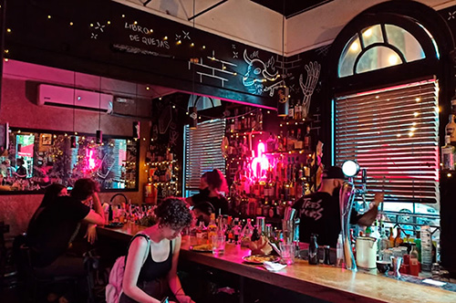
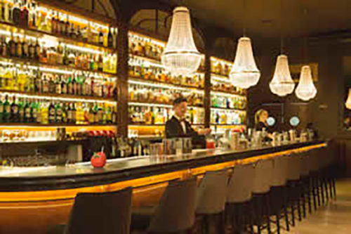
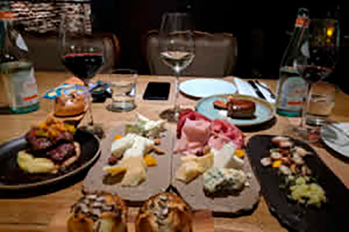
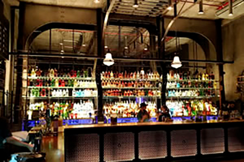

Bares
Buenos Aires es una ciudad enorme con tantas oportunidades para beber bien. Ninguna guía puede ser completamente completa, pero esta lista incluye las comidas emblemáticas de la ciudad, los establecimientos más populares, algunas gemas ocultas y algunas aperturas interesantes.
Los mejores lugares para beber
Tres Monos
El bar Tres Monos, en Palermo, está en el puesto 85 del ranking The World’s 50 Best Bars. En sólo un año, se ubicó entre los 100 mejores del mundo. Excelente atención, tragos de autor y un ambiente con mucha onda. Tienen una buena carta de tragos y bebidas. Tres Monos, creado y atendido por los bartenders Sebastián Atienza y Carlos Aguinsky.
Presidente Bar
Este bar ubicado en el barrio de la recoleta se destaca por una excelente la ambientación, calidad y gusto en el diseño. Armado de diferentes tipos de lugares, màs privado, reto y la barra. Excelentes los tragos. La comida de alta calidad y bien servida en cuanto a la presentación y cantidad. La atención muy buena. Un lugar diferente, de nivel de excelencia. Los precios son altos pero valen la pena para un momento especial. Mejor hacer reserva si van a comer, de lo contrario pueden esperar bastante.
Vico Wine Bar
Este bar de vinos diferente tiene más de 140 variedades de vino, a las que te puedes servir desde dispensadores de autoservicio Wineemotion. No dudes en hacer algunas preguntas al bartender si quieres alguna recomendación, luego inserta una tarjeta en la máquina y sírvete una degustación (35 ml), media copa (75 ml) o copa (150 ml). Muy buen concepto y experiencia. Atendido por buena gente con buen trato. La música está a un nivel que permite la charla sin gritos. La comida excelente aunque las porciones son chicas. Infinidad de vinos para degustar.
Uptown
The Uptown es un bar ambientado como una estación de Metro del Bronx en Nueva York. Ubicado en el barrio de Palermo, se destaca con sus tragos son super originales que salen de lo tradicional. Todas las mesas son con reserva previa sino hay que estar parado cerca de la barra. El servicio es muy bueno y los barman’s te aconsejan sobre que tomar. El precio promedio es de $1000 ARS por trago. Siempre hay un dj en vivo.
